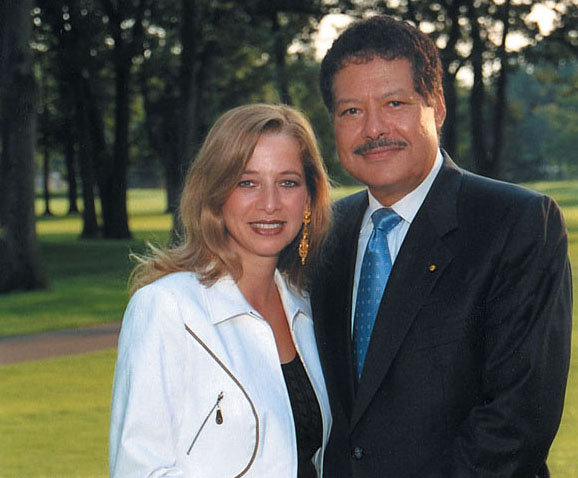
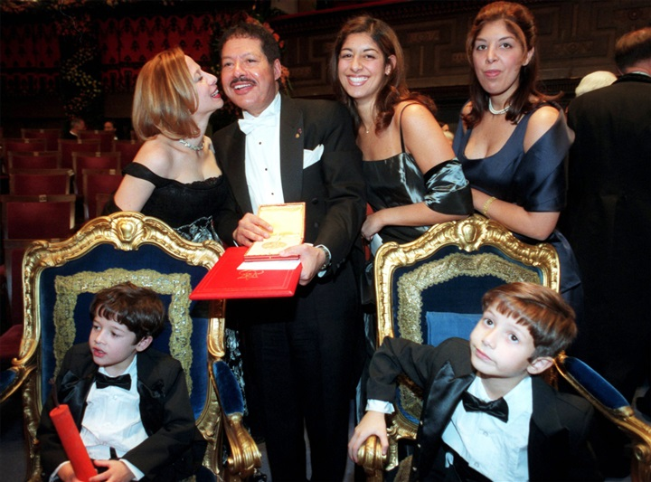

The life of Dr Ahmed Zewail
-
Egypt is the forerunner in all scientific fields
And literary and artistic works, and this topic is talking about one of the leading scholars of Egypt who excelled
American scientists and Europe, and was proud that Egypt has won the Nobel Prize in
Chemistry for the year 1999 alone, honored by Egypt and the world.
The summary of His Birth and Education



-
Ahmed Zewail was born on February 26, 1946 in Damanhour, Egypt and raised in Disuq.
-
He received bachelor's degree and MS degree from the University of Alexandria
before moving from Egypt to the United States to complete his PhD at the University of Pennsylvania with advisor Robin Hochstrasser.
-
He completed a post-doctoral fellowship at the University of California, Berkeley with advisor Charles B. Harris.
Can Follow Us At :